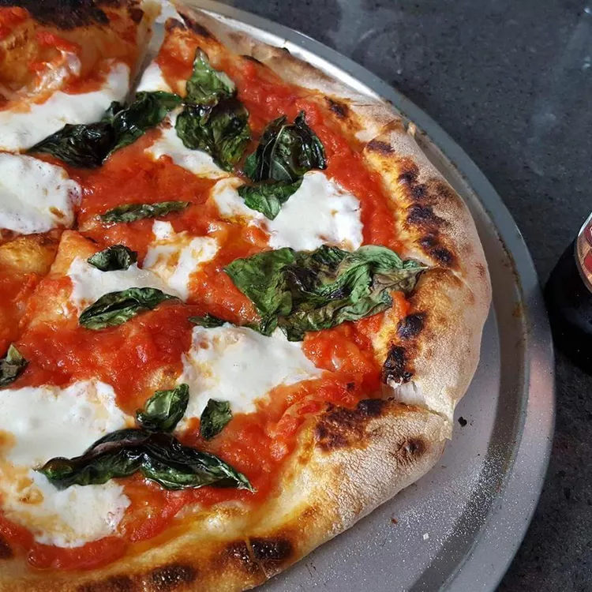

Pizza

A Turtle's Favorite Food
Best paired with a tall glass of soda pop!
Ingredients
- Pizza dough
- Mozzarella
- Onion and garlic
- Tomato sauce
- Basil
Steps
- Make the dough.
- Spread the tomato sauce on the dough.
- Slice and lay the Mozzarella evenly on the sauce.
- Bake the pizza in a brick oven for 10 minutes.
- Add the basil before serving.